Home
About
Search
July
January
February
March
April
May
June
July
August
September
October
November
December
African Lily
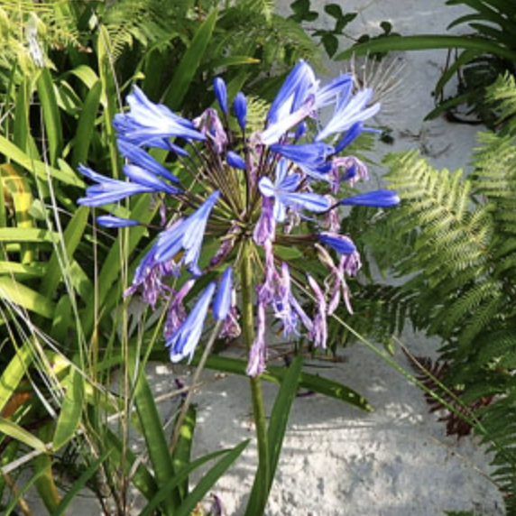
Annual Mercury
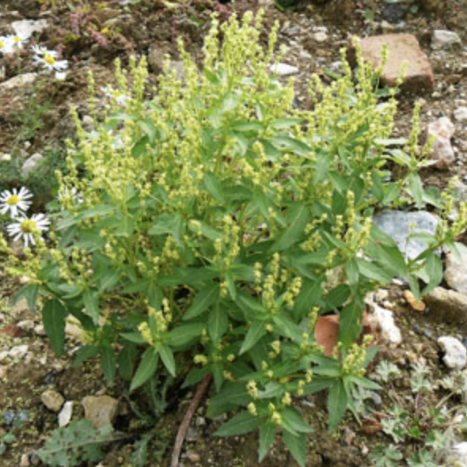
Common Fleabane
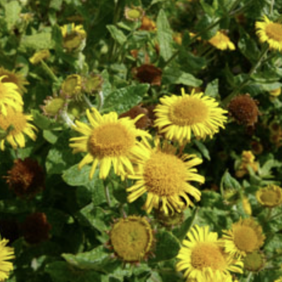
Common Sea-lavender
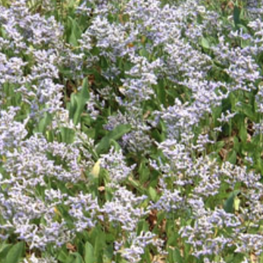
Fennel
Giant Bellflower
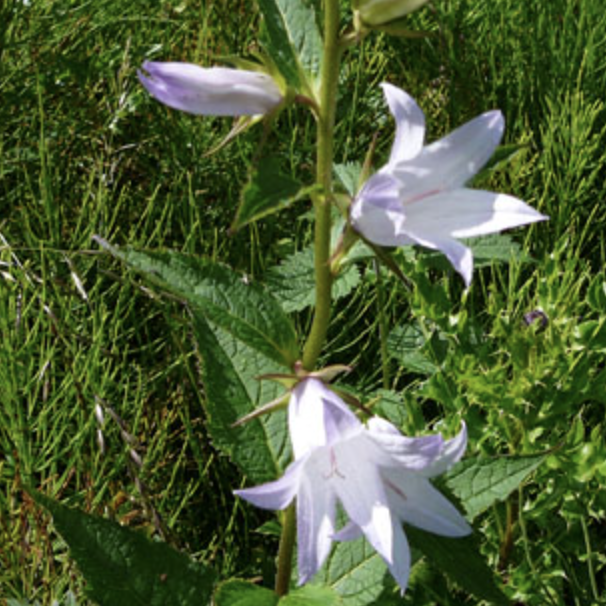
Goldenrod
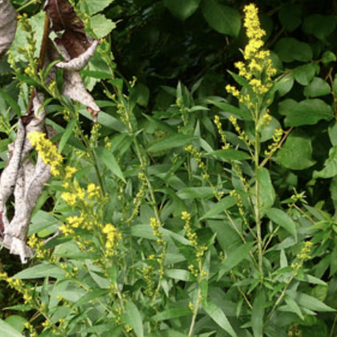
Heather
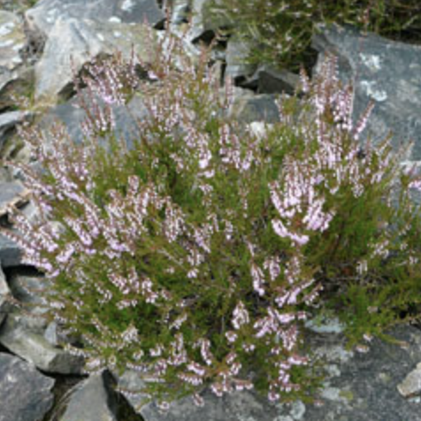
Indian-bean-tree
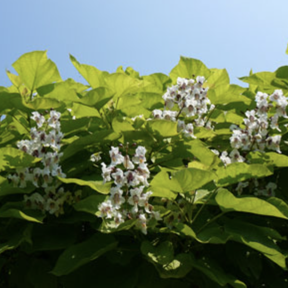
Love-lies-bleeding
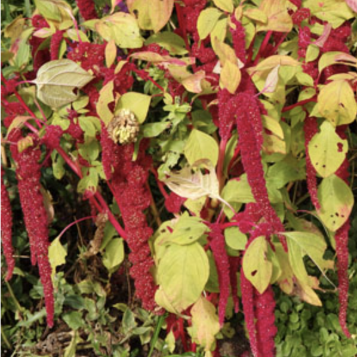
Mugwort
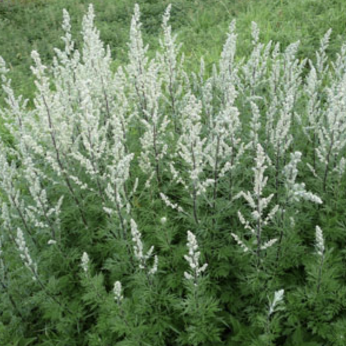
Sneezewort
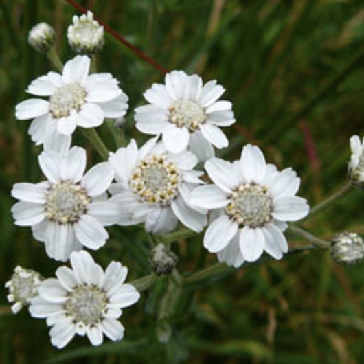
Sunflower
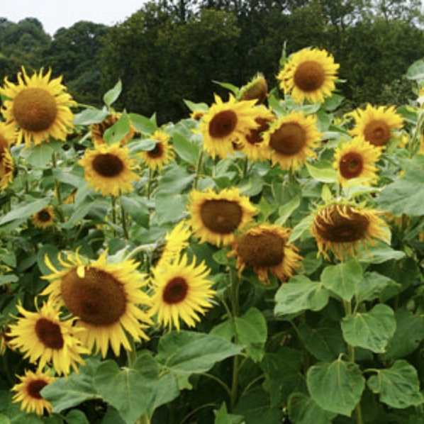
Tansy
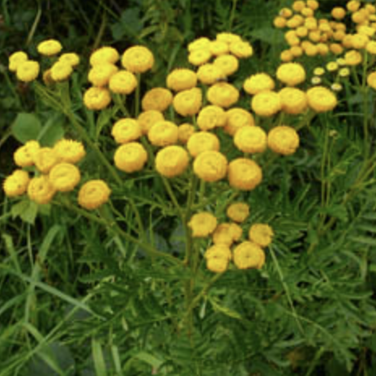
Tomato
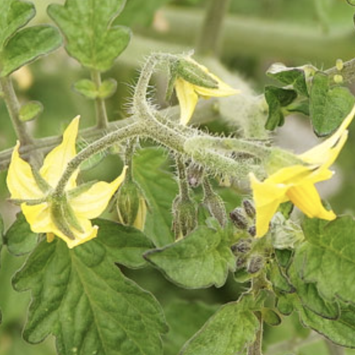
Virginia-creeper
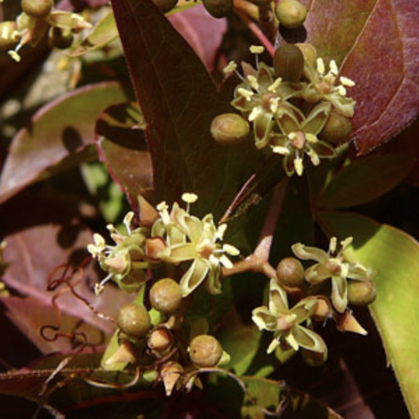
Wood Sage
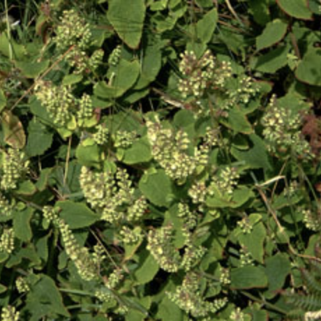
Yellow Loosestrife
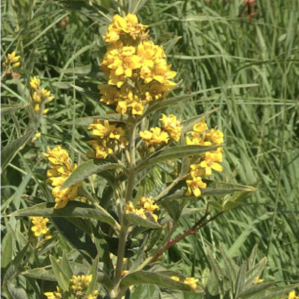